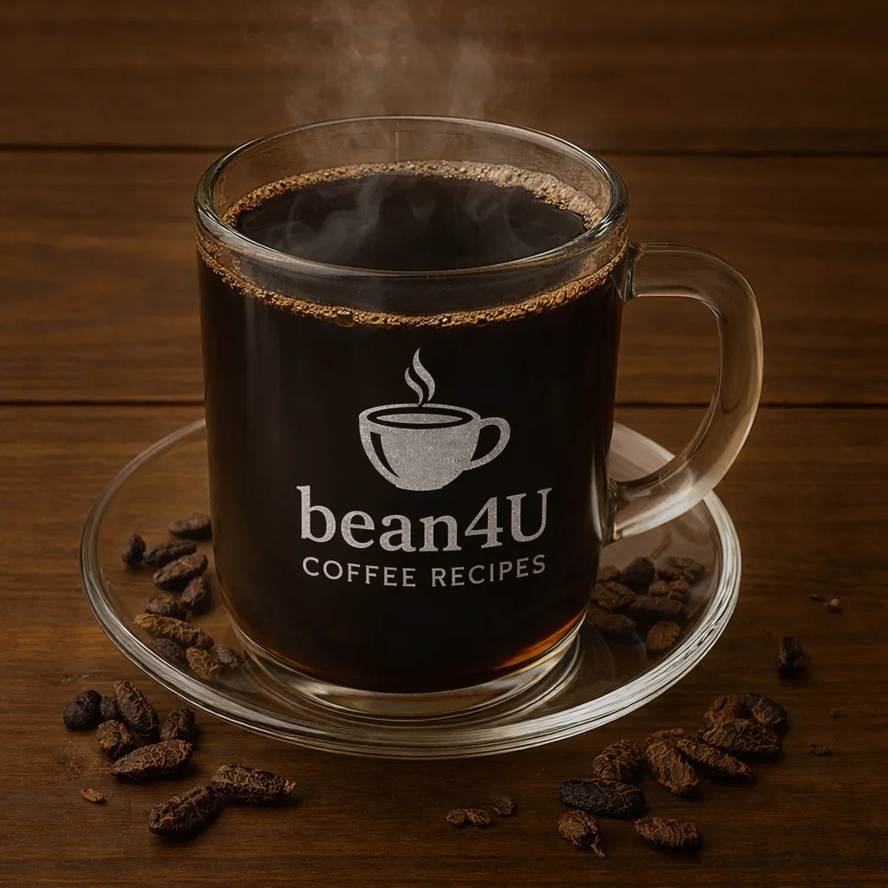

Café Touba

Ingredients
- 2 cups water
- 2 tbsp coarse dark roast coffee
- 1–2 tsp grains of selim (guinea pepper) or substitution: black pepper + clove
- Sugar to taste
Preparation
- Grind or lightly crush the pepper/clove mixture and roast briefly with coffee.
- Boil water and add coffee + spice mix; simmer for several minutes.
- Strain and sweeten to taste. Serve hot.
- youtube short quickly explaining it:
- short Explanation
Video from @senegalcoffee
Channel